Explore the History Timeline of the college

Discover our hallmark Engineering Programs

Learn about our College's Naming
Explore the History Timeline of the college
Discover our hallmark Engineering Programs
Learn about our College's Naming
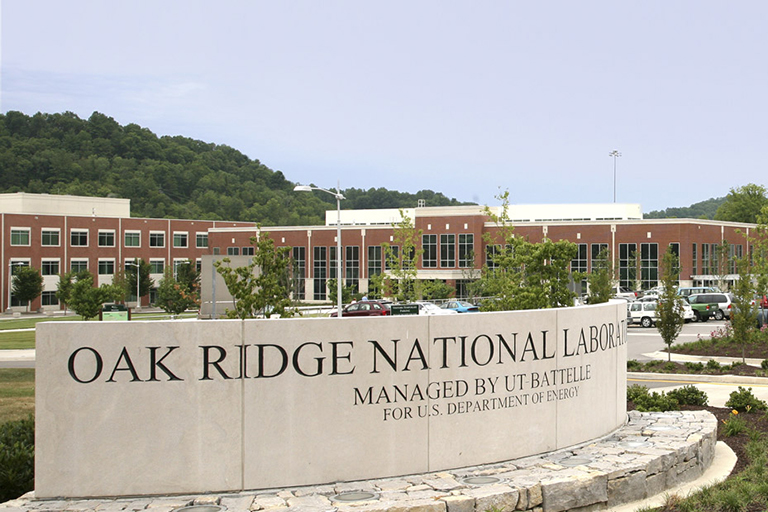
UT joins with Battelle to take over management of Oak Ridge National Laboratory (ORNL). ORNL provides exceptional researchers with distinctive equipment and unique facilities to solve some of the world’s most challenging scientific and technical problems. Its resources include the Spallation Neutron Source, the world’s most powerful source of pulsed neutrons for research; the world’s fastest unclassified supercomputer; one of the world’s leading research reactors; and some of the largest and most advanced additive manufacturing equipment in the world.
Dean Kuo came to the University of Tennessee from Texas A&M University. Under his guidance, the college greatly expanded its research role through partnerships and joint professorships with Oak Ridge National Laboratory and other public, government, and private entities. Enrollment in the PhD program also increased dramatically during this time.
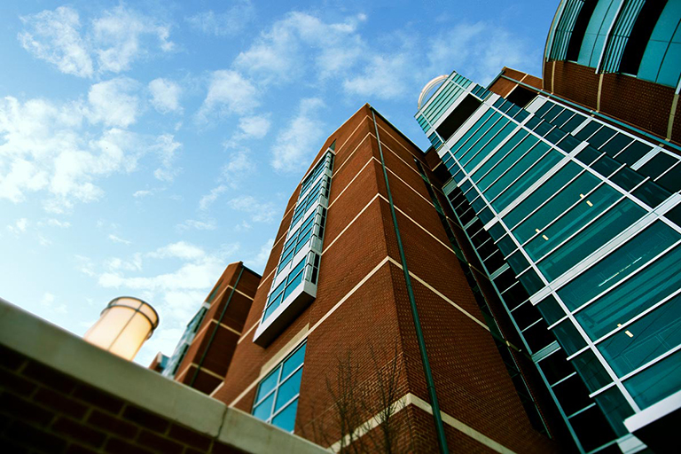
Min Kao, electrical engineering alumnus and CEO of Garmin Ltd., commits to a transformational gift of $17.5 million to the college, with $12.5 million designated to construct a new, state-of-the-art building to house the Min H. Kao Department of Electrical Engineering and Computer Science. The state provided $25 million. Kao said, “I am fortunate to be in a position to give back to a university that gave so much to me.”
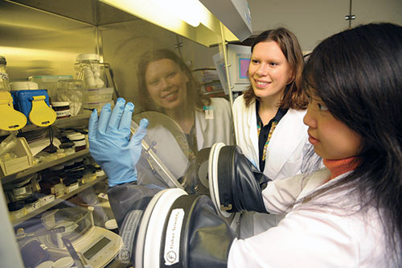
In partnership with Siemens Medical Solutions Medical Imaging, the college establishes the Scintillation Materials Research Center. The center specializes in growth and characterization of scintillation materials, which are used in a diversity of applications. In addition, the Governor’s Chair Program was established by UT and Oak Ridge National Laboratory, bringing exceptionally accomplished researchers from around the world to Tennessee. The college currently has 11 Governor’s Chairs across several departments.
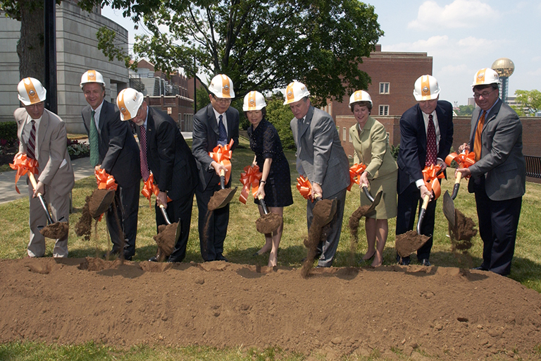
The college breaks ground on the new Min H. Kao Electrical Engineering and Computer Science Building on May 14, 2007, named after Min Kao, electrical engineering alumnus and CEO of Garmin Ltd. Kao and his wife, Yu-Fan, have generously supported engineering and science education over the years and, after discussing with his former mentor and UT electrical engineering professor, James C. Hung, the Kaos elected to donate $12.5 million to construct a new building for the college.
Dean Davis’s thirty-year career at the University of Tennessee culminated in his appointment as dean of engineering following serving as Interim Dean and as Associate Dean for Research and Technology for the college. Under Dean Davis’s leadership, the college has surmounted fiscal challenges and has seen increased enrollment in both undergraduate and graduate programs.
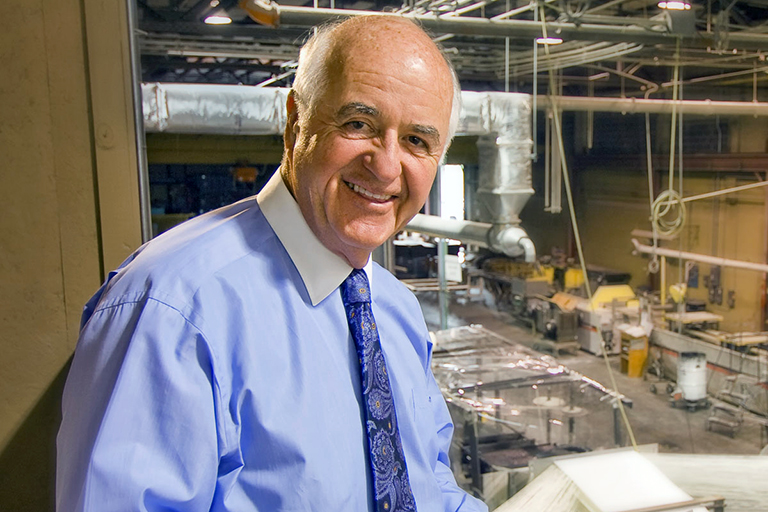
The college breaks ground on the John D. Tickle Engineering Building. The new facility houses the Department of Civil and Environmental Engineering and the Department of Industrial and Systems Engineering. It is named after alumnus John Tickle, president and owner of the Strongwell Corporation.
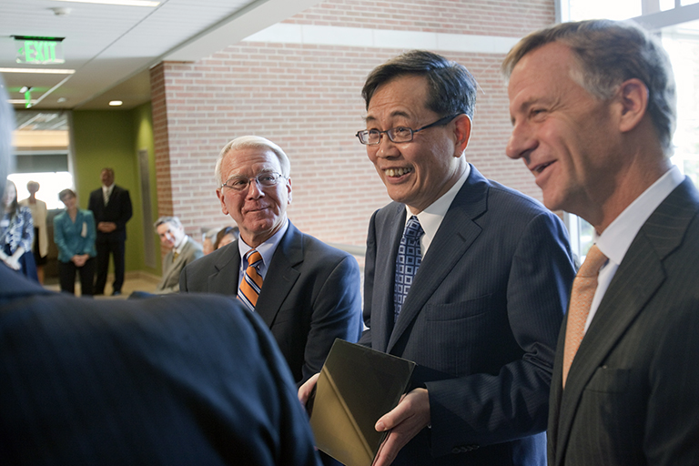
The college dedicates the Min H. Kao Electrical Engineering and Computer Science Building in a gala event on March 14 with a ceremony that included Kao and his wife, Fan; Governor Bill Haslam; UT President Joseph DiPietro; UT Chancellor Jimmy G. Cheek; Dean Wayne T. Davis; EECS Professor and Department Head Kevin Tomsovic; Sue Hung, wife of the late EECS professor James Hung, Kao’s academic mentor; and Min H. Kao Fellow Michael Pickelsimer.
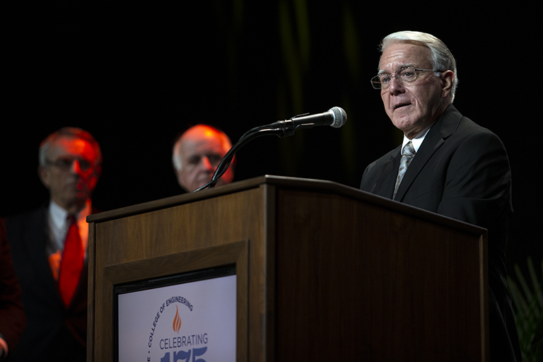
The college celebrates 175 years of engineering at the University of Tennessee. The establishment of the Wayne T. Davis Endowed Dean’s Chair of Engineering was announced at the gala event recognizing the college’s 175th anniversary. Celeste Baine, a biomedical engineer, director of the Engineering Education Service Center, and the award-winning author of over twenty books on engineering careers and education, spoke at the gala.
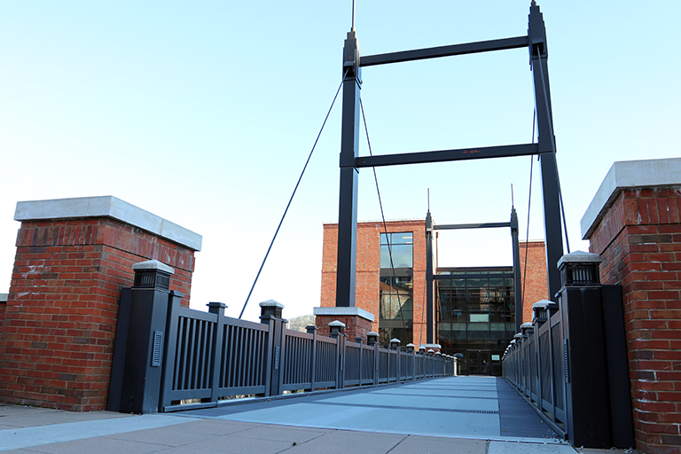
The John D. Tickle Engineering Building is dedicated on October 4, 2013. Unique to this building and to the Knoxville campus is a pedestrian bridge donated by Strongwell Corporation and manufactured from the company’s pultruded fiber reinforced polymer structural components. Enhancing pedestrian access, this bridge is a signature element that provides both a visual and physical connection from the building to the center of the engineering campus on the Hill.
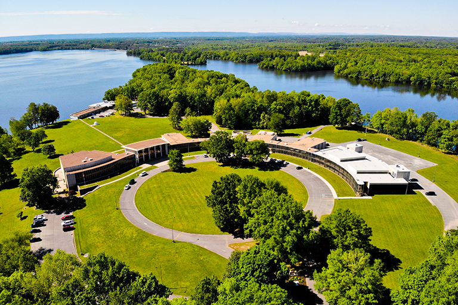
The University of Tennessee Space Institute (UTSI) in Tullahoma, Tennessee, celebrates its 50th anniversary. UTSI is an internationally recognized institution for graduate study and research in engineering, physics, mathematics, and aviation systems and has made remarkable contributions at the local, state, national, and global levels, and its alumni includes nine astronauts.
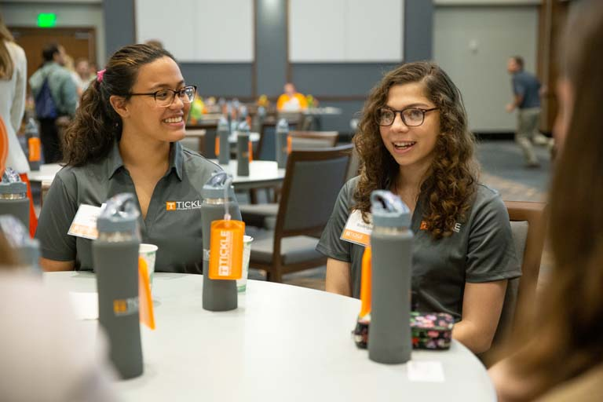
The college hosts the first WomEngineers Day, a biennial conference that brings together student, faculty, staff, and industry professionals to discuss topics that are not covered in the STEM curriculum but are important for navigating career and life choices. The first event was organized primarily by 19 UT students with the support of the college’s Board of Advisors. It was held at the Knoxville Convention Center with more than 350 high school and college students in attendance.
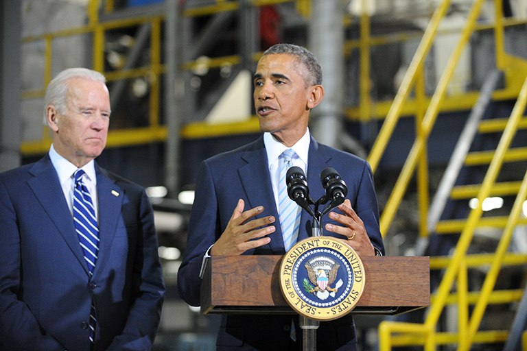
President Barack Obama announces UT’s leadership of the $259 million Institute for Advanced Composites Manufacturing Innovation, of which the college’s faculty and researchers play a major role. IACMI’s collaborative structure allows private industry to work with research institutions and state partners to accelerate the development and adoption of cutting-edge manufacturing technologies.
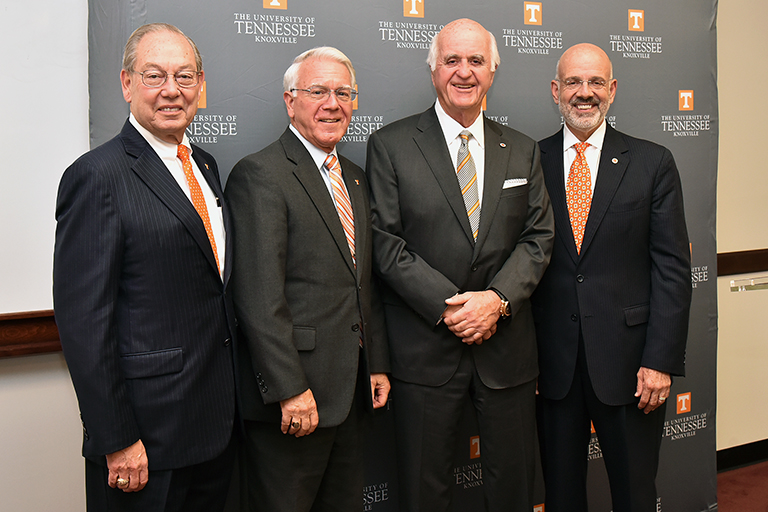
For just the second time in the 222-year history of UT, an academic college has been named in recognition of an alumnus and donor. On October 14, 2016, the university’s Board of Trustees voted to name our college the Tickle College of Engineering in recognition of the latest transformational support from the longtime benefactor.
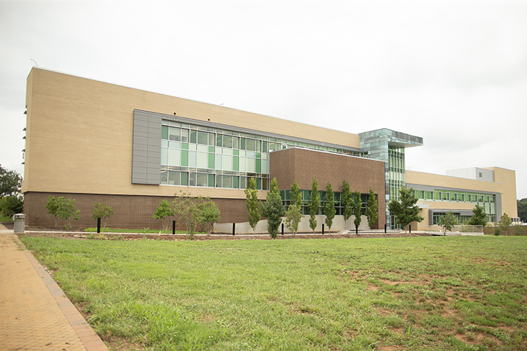
The Joint Institute for Advanced Materials (JIAM) opens on the university’s Cherokee Farm Research Campus. JIAM is composed of a multidisciplinary team of scientists from UT and Oak Ridge National Laboratory and is one of the world’s largest and best-equipped centers for advanced materials science. Its research is focused on three broad classes of materials: Advanced Structural Materials, Soft and Hybrid Materials, and Functional Materials and Devices.
The engineering honors program is renamed the Joseph C. and Judith E. Cook Grand Challenge Honors Program following a significant commitment by industrial engineering alumnus Joe Cook, who graduated as an industrial engineering major and a Torchbearer in 1965, and his wife, Judy. The 14 Grand Challenges of Engineering are global issues identified by the National Academy of Engineering.
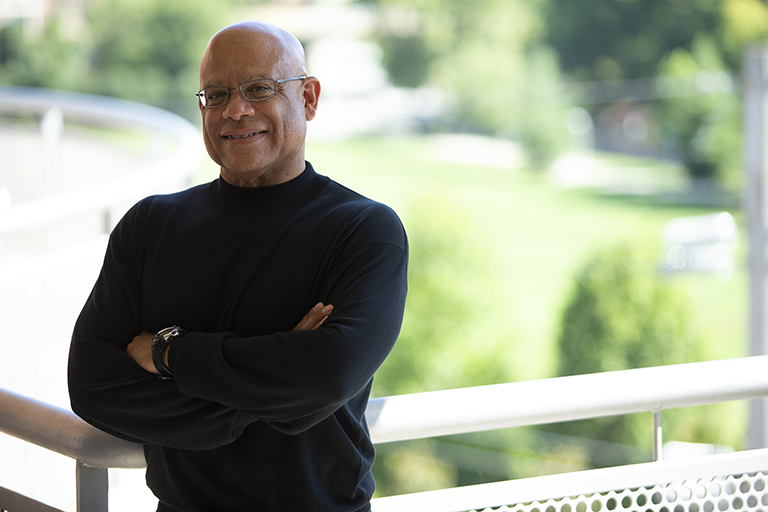
Dean Wayne Davis is announced Interim Chancellor of the University of Tennessee, Knoxville. The college’s Associate Dean for Faculty Affairs and Engagement Lynne Parker is announced as interim dean. In August, Parker began serving as assistant director for artificial intelligence for the White House Office of Science and Technology Policy. In her place, John Fisher Distinguished Professor Mark Dean stepped up to serve in the interim dean position.
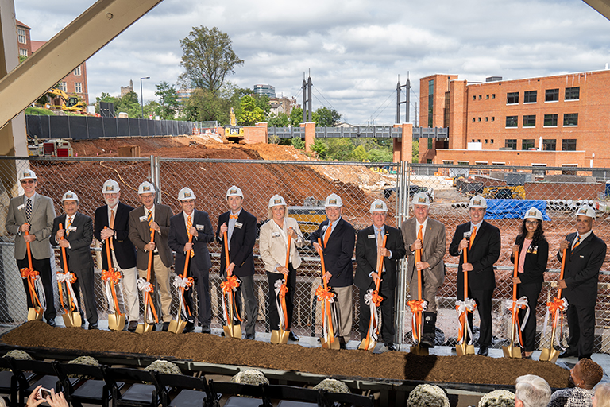
The college broke ground on the 228-000 square-foot Zeanah Engineering Complex, which opened in 2021 and serves as the Gateway to Engineering. The building is home to the Department of Nuclear Engineering, the Min H. and Yu Fan Kao Innovation and Collaboration Studio, the innovative Jerry E. Stoneking engage Engineering Fundamentals program, the Joseph C. and Judith E. Cook Grand Challenge Honors program, and college administrative offices.
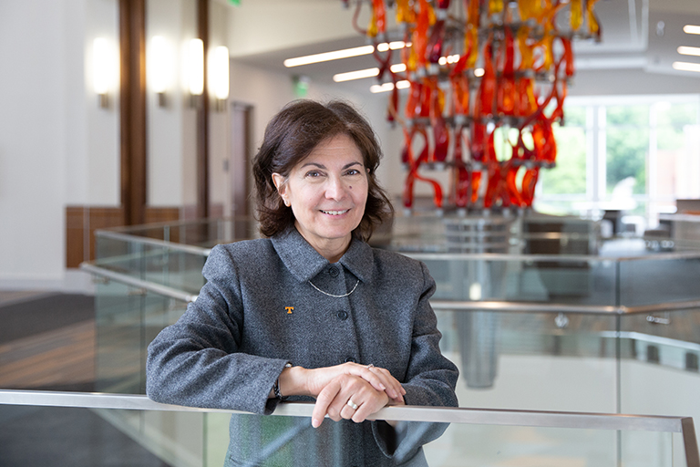
Janis Terpenny joins the college as dean and Wayne T. Davis Dean’s Chair. Prior to coming to UT, she was head of the industrial and manufacturing engineering department at Pennsylvania State University. Community, culture, partnerships, and development were priorities for Dean Terpenny. She led the college through the beginning of the COVID-19 pandemic, the development of a new strategic plan, and closer partnerships with key constituencies. She was also successful in many fundraising activities for the college.
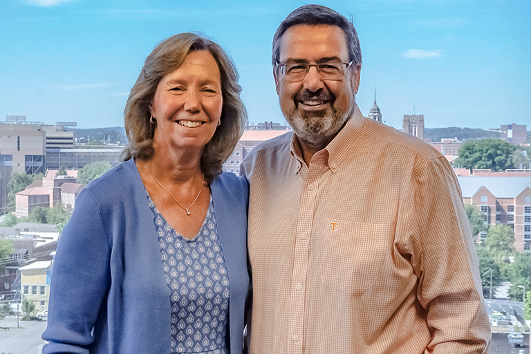
On September 11, the UT Board of Trustees voted to approve the naming of the Zeanah Engineering Complex after longtime supporters Eric (’84) and Elaine (’82) Zeanah. The complex, dubbed the Gateway to Engineering, opened to students at the start of the fall 2021 semester.
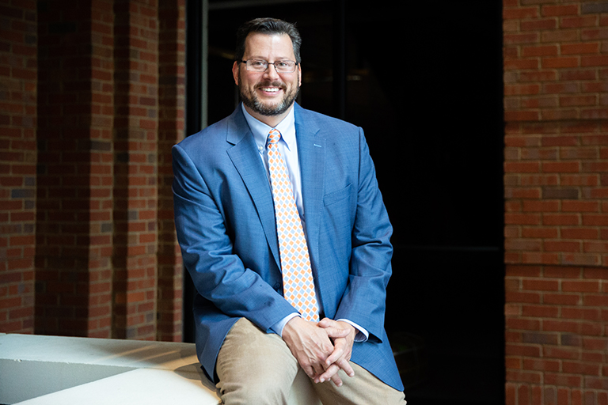
Janis Terpenny steps down as dean; Matthew Mench, head of the Department of Mechanical, Aerospace, and Biomedical Engineering (MABE), steps up to serve as interim dean. In June, after a nationwide search, Mench was named dean and Wayne T. Davis Dean’s Chair. Mench had served as department head of MABE since August 2013, except for a brief period in 2019 and 2020 when he stepped up to serve as interim vice chancellor for research.